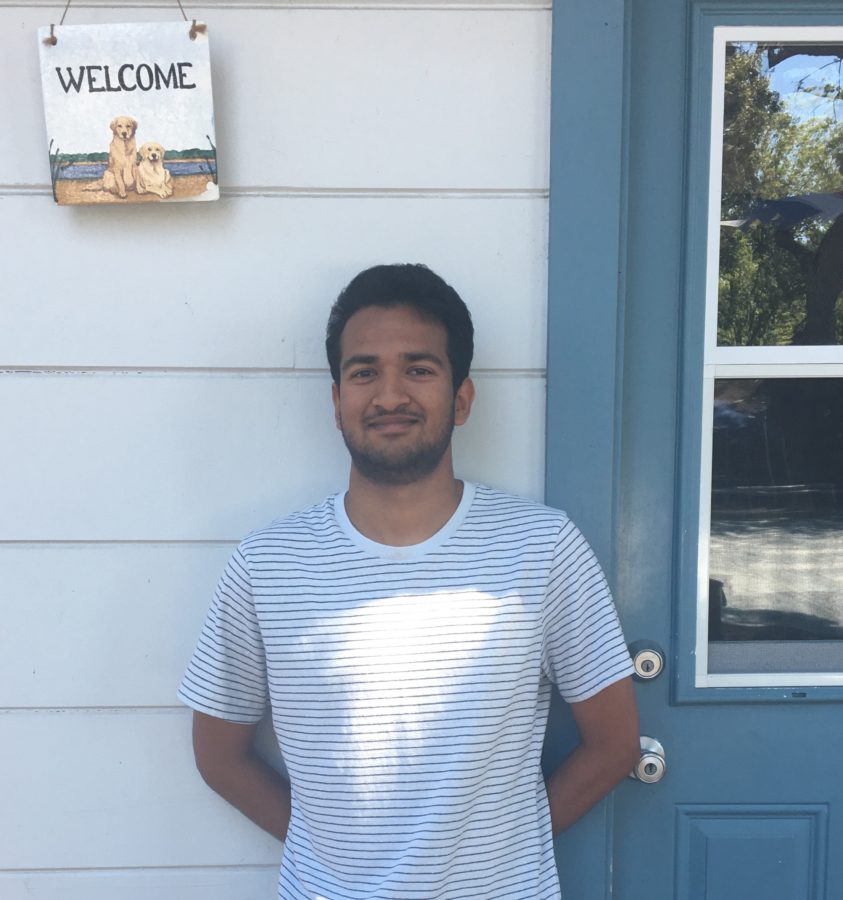

Taasin Saquib
Taasin Saquib
I'm Taasin and I'm a Computer Science and Engineering student at UCLA (class of 2020).
I am proudly from the Bay Area, and enjoy thinking about design as much as I do engineering. My hobbies include sketching, cooking, gardening, playing soccer, and browsing Kickstarter.
I worked on creating a new feature for project Looma, which brings modern equcational tools to students in Nepalese villages. The Looma box had a webcam, but no software interface to use it. Over the course of the summer I created a user interface from scratch to allow users to stream, record, save, and access video from the webcam; I used HTML/CSS and javascript. On the server side, I implemented websockets and command-line tools to allow the webcam to stream video to the browser through a local server. I used php and various node packages to implement ths.
Working on an application that syncronizes LEDs to music chosen by the user. The lights are controlled by an Arduino Nano, which recieves frequency data about the song from the browser.
Created an application that integrated IBM’s Watson AI to conduct an interview with the user and compare his or her answers to data from various companies to determine if a candidate would be a good “fit” at the company.
I'm an amateur photographer and am currently working on creating a website to showcase my pictures.
I'm interested in music production, and have created a fun voice sampler application.
taasin.saquib@gmail.com